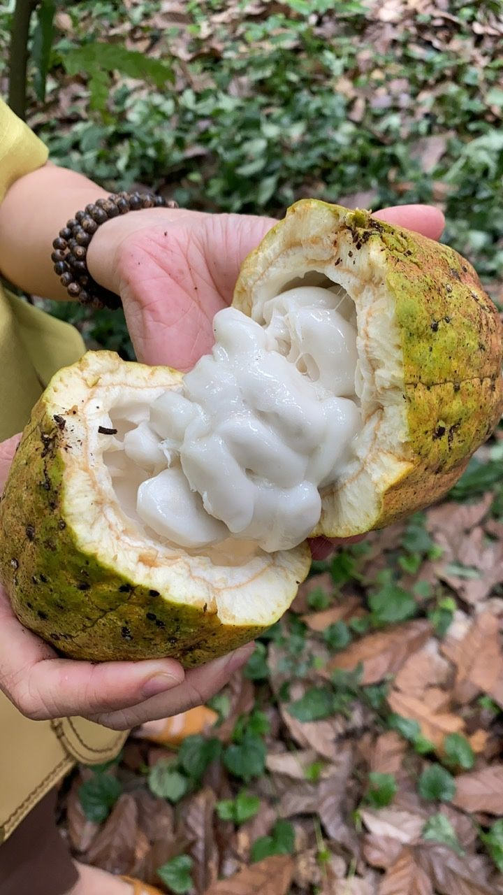
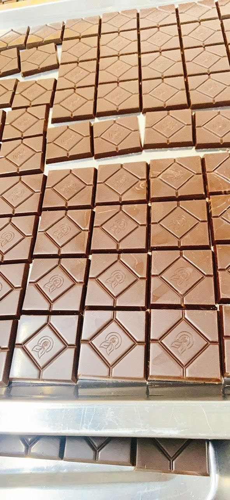

Cacao mộc, từ vườn đến thanh socola.
Bổ đôi một quả cacao, bạn sẽ thấy lớp cùi trắng và những hạt đang đợi được chế biến. Đó là nơi một Ngăn bắt đầu.

Một vườn ở Châu Đức
Xưởng của OCA nằm ở ấp Tân Thành, xã Bình Giã, huyện Châu Đức, tỉnh Bà Rịa – Vũng Tàu. Vườn cacao trải dưới tán cây lớn, mặt đất phủ lá khô quanh năm, quả treo sát thân và cành.
Chúng tôi chọn mẻ này vì xuất xứ có thể truy được đến tận đất. Nói về cacao Việt mà không biết đất nào sinh ra hạt thì chỉ là nói chung chung.


Hai người giữ vườn
Chị Thu và ông Nozawa là hai người gắn với vườn cacao Châu Đức.
[Điền một khoảnh khắc cụ thể với chị Thu hoặc ông Nozawa: một việc họ làm, một lời họ nói. Chỉ viết điều bạn đã thấy trực tiếp.]


Từ cây đến thanh, không đi tắt
Quy trình được gọi là Tree-to-Bar: từ cây đến thanh, do một xưởng làm từ đầu đến cuối. Hạt được lên men và phơi, rồi rang và nghiền thành khối cacao mộc. Không kiềm hóa, không hương liệu, không phụ gia.
Chúng tôi không che những chỗ chưa hoàn hảo. Cacao mộc không ngọt gắt như socola công nghiệp. Nếu bạn quen vị ngọt, vị đầu tiên có thể hơi lạ.


“Không kiềm hóa. Không phụ gia. Chỉ có cacao và thời gian.”
Vì sao mẻ này được mở
Một vườn nhỏ khó có đường đi tới người ăn ở xa. Cacao nguyên bản thường bị bán rời, theo từng thanh nhỏ, và không ai kể được nó đến từ đâu.
Gạc Măng Rê muốn rủ bạn cùng mở một Ngăn. Mỗi lần một Ngăn được mở là thêm một lần chúng ta hiểu hơn về thứ mình đang thụ hưởng, và giúp người làm có thêm một lối đi.

Cacao mộc, dạng bột và nibs
- Bột cacao không kiềm hóa, 250g
- Nibs cacao, 100g
Chúng tôi xác nhận giá, số lượng và lịch giao khi bạn nhắn. Không có thanh toán trên trang này.
Cất một phần vị quê nhà.
Nhắn để đặt phần. Người phụ trách sẽ trả lời, xác nhận số lượng và báo lịch mẻ.